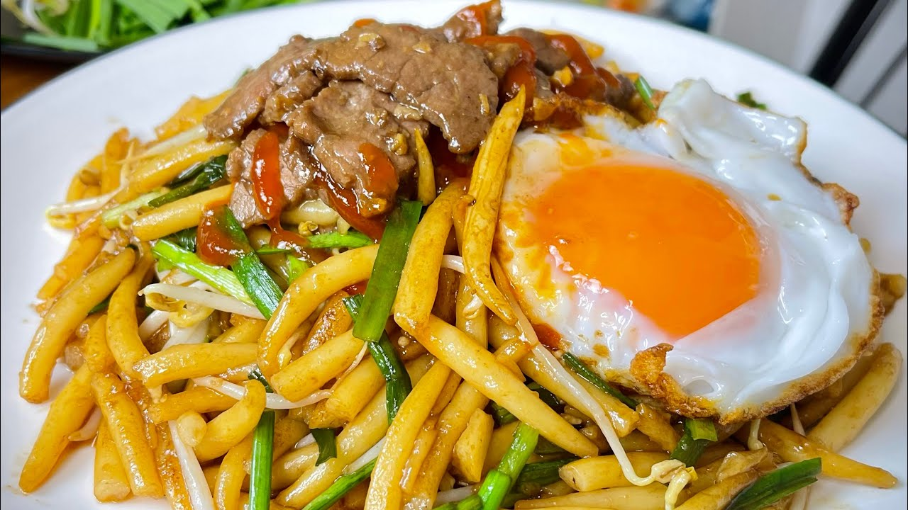
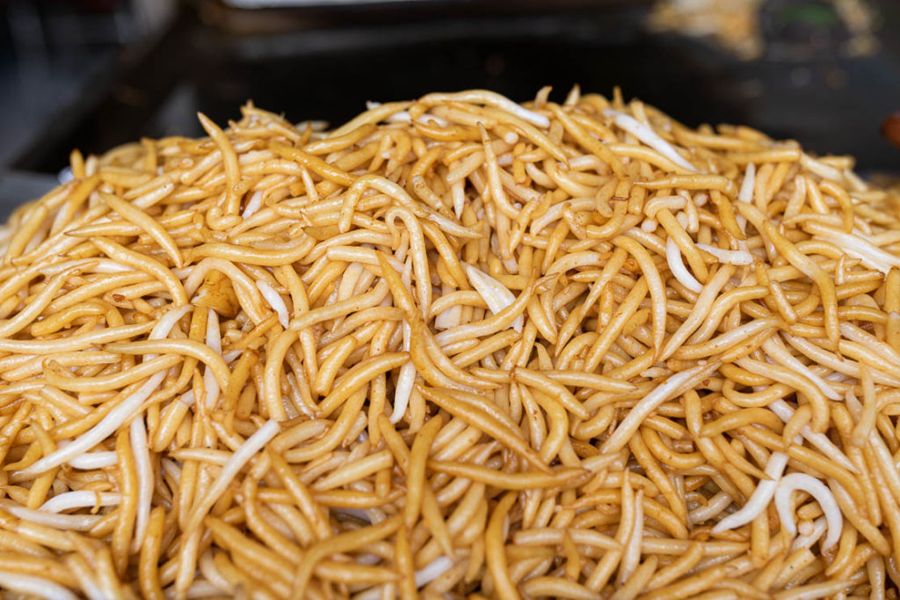
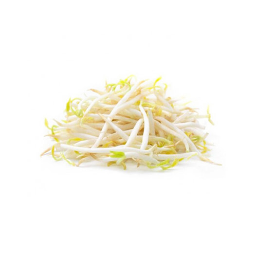
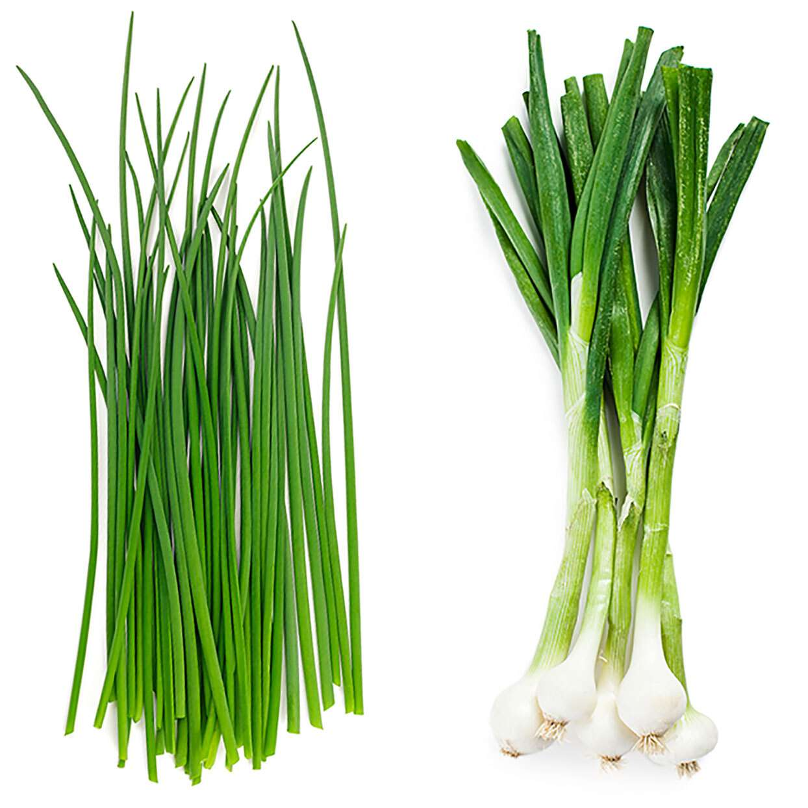

Lot Cha
លតឆា
Lot Cha is a popular Cambodian street food made with stir-fried short rice noodles, garlic, vegetables, and egg. It has a smoky flavor from high-heat cooking and is often served with meat and topped with a fried egg, making it a simple yet delicious Khmer favorite.
Calories
700 kcal per serving

Lot Cha Noodles

300g
Buy NowPork or Chicken

200g
Buy NowGarlic

3 cloves
Buy NowBean Sprouts

1 cup
Buy NowChives / Green Onion

1/2 cup
Buy NowSoy Sauce

1 tbsp
Buy NowFish Sauce

1 tbsp
Buy NowEgg

1–2 eggs
Buy NowRecipe
-
Step 1: Prepare ingredients
- Chop garlic and vegetables
- Slice meat into small pieces
- Prepare noodles
-
Step 2: Cook garlic and meat
- Heat oil in a pan or wok
- Add garlic and stir until fragrant
- Add meat and cook until done
-
Step 3: Add noodles and sauce
- Add noodles into the pan
- Add soy sauce and fish sauce
- Stir well on high heat
-
Step 4: Add vegetables
- Add bean sprouts and chives
- Stir quickly to keep them fresh
-
Step 5: Add egg
- Push noodles aside
- Crack egg and scramble or fry
- Mix everything together
-
Step 6: Serve
- Serve hot on a plate
- Optional: add chili sauce or lime